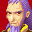
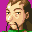
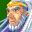

Random Escapades of Bored Adepts
 I LIKE COFFEE!
I LIKE COFFEE!
 Blegh. Coffee tastes nasty.
Blegh. Coffee tastes nasty.
*gasp* Did you just... insult coffee?
 o_o;; Calm down, Mia...
o_o;; Calm down, Mia...
DON'T TELL ME TO CALM DOWN!
 It must be that time of the month. *sigh*
It must be that time of the month. *sigh*
 Or the coffee made her insanely psycho for some reason.
Or the coffee made her insanely psycho for some reason.
Guys, I'm bored. Can't we go on another adventure?
 Unless some guy pops out of nowhere declaring his intent to take over the
world, nope.
Unless some guy pops out of nowhere declaring his intent to take over the
world, nope.
 I wonder what happened to Alex...
I wonder what happened to Alex...
 The Wise One probably killed him and hid the body.
The Wise One probably killed him and hid the body.
Good. Alex was EVIL! EEEEEEVIIIIIILLLLLLL!
We get the picture.
We don't need to go on an adventure. We could take a vacation.
Ooh! Vacation! I want to go on a vacation!
That doesn't sound like a bad idea.
Let's go to Tolbi and eat pizza. I like pizza.
Uh... no thanks.
Babi's dead, you know. There's nothing to be afraid of.
Yeah, I know, but I still don't like Tolbi.
Since it's my idea, I'm going to pick.
There's no need to be bossy... I'm sure we can all decide on a place to
go together.
I'd like to go to Contigo.
I was thinking I'd like to see Lemuria. How come we never had a scene if
we go there in the second game anyway?
I want to go to Apojii Islands! It must be so nice and warm there.
I'd like to go to Kalay and see what it's like.
I think we should go to Xian. That kung fu stuff sounds fun.
Your fire Psynergy is bad enough. I don't want you learning kung fu.
*pouts* I'm not going to hurt anyone...
Well, there's lots of places in Angara I haven't seen. I wouldn't mind
seeing one of them.
TOLBI!
Lemuria!
Apojii!
Contigo!
Xian!
Kalay!
Can't we just pick one place?
Sigh... okay, how about drawing straws?
BOO!
AAAAAHHHHH!!!!!!
Oh no... what do you want now?
We have a problem. It seems Alex survived the collapse of Mt. Aleph. I
can't find his corpse anywhere.
No... no... NOOOOOOOOOOOOOOOOO!!!!!
Look on the bright side, Mia, you still have a chance to violently murder
him.
Oh, I do, don't I? Hooray!
Hey, whatever happened to travelling to random places?
It looks like our vacation plans are being put on hold...
So what do you want us to do?
I simply want you to hunt him down and find out what he's up to.
And why can't you do it yourself?
... I can't. I need to watch Mt. Aleph in case it explodes again.
Really?
Yes, really. Um... see ya! *disappears*
... So, how about that picking straws thing then?
We'll pick the choice of whoever draws the longest straw.
Umm... have you forgotten the Wise One's request already?
What the heck is a Wise One?
I dunno. Ivan must be like, crazy or something.
*sigh* I see...
*muttering* And I was looking forward to murdering him violently.
Here are the straws. Now go ahead and pick.
Alright, I got the longest straw! I can't wait to get a suntan!
Oh boy, I'm looking forward to seeing Jenna and Mia sunbathing on the
beach. Heheheheheheheh...
On second thoughts, let's draw again.
Seriously?
At this rate, we'll never get anywhere.
... Is there a reason you didn't mention me, Garet?
Oh dear.
Um, er, you know what? Forget I said anything..
No! I won't forget it! Are you saying I'm not attractive?
Goodness, Sheba, you are touchy today...
Okay, let's get to Apojii already.
*The Adepts teleport away to Apojii*
Ohh... It's so warm.
Is this really a good idea? I mean, Alex...
Forget about him, Ivan. It's about time we had a vacation.
Let's go to the beach! I bet I can build the biggest sandcastle!
Huh, what's a sandcastle?
Y-you don't know what a sandcastle is?
We never even had time to build sandcastles on the journey.
I think it's a castle made out of sand. I've never seen one though.
Wow... you poor things...
Lemuria has cliffs on all sides, and we don't even seem to have any
beaches there.
It's always so cold and there's snow everywhere for miles back home.
Huh, look at that hula dancer over there.
What's with the pink hair? Weird.
O_O
She seems to be startled by our presence.
Um, isn't that a guy?
Er... hello?
!!! *runs away*
Uh, what just happened there?
What a strange person. Come to think of it, he seemed rather familiar.
I think I would remember meeting a pink-haired man in a hula skirt before.
Wasn't the way he ran off a bit suspicious? I think we should follow him.
Maybe he's just shy?
Or he's embarrassed about being seen in a skirt. Maybe he's been forced to
wear it?
There's definitely something suspicious about him. I agree wih Garet,
let's chase him.
*They chase after the pink-haired man and soon find him
trying very badly to hide behind a palm tree*
Hey, we can see you, you know.
Eep.
How come you're running from us?
Uh...?
Is it because you're wearing a skirt?
O_o ... Er, yes. It's very embarrassing.
So, why are you wearing one?
Because... I lost a bet. So I have to wear it.
Is your hair naturally that colour?
Y-yes! I've had pink hair my whole life! Honest!
Calm down. We're not interrogating you.
Forgive me for asking, but have we met before? I think you seem kind of
familiar.
I've never seen any of you before!
(muttering to Sheba) Hey, maybe you should read his mind. Something seems
off.
(muttering back) Okay, I'll use the long range mind reading skill I
demonstrated on Venus Lighthouse that for some bizarre reason I have not been
able to use again.
So, if you have nothing else to ask, I'll- ACK!
*gasp* It's Alex!
: Oh crap! *warps out*
Wow, I can't believe we fell for that paper thin disguise.
He's hardly the master of disguises.
Geez, I wonder what he'll try next. Some crappy mask that only covers up
one eye?
Should we chase after him? We were going to do the exact opposite of that
but ended up finding him after all...
As much as I want to kill him, I really want to sunbathe.
The Wise One only wanted us to find out what he was up to anyway. We'll
just tell him Alex was hula dancing in Apojii.
Is he even going to believe us?
*The Adepts head down to the beach. Alex returns and
watches from a distance.*
What are they doing? I wonder if this is a trap.
They probably intend to lull me into a false sense of security then when my
guard is down, they will capture me and haul my ass to the Wise One. Well, I'm
not falling for it. I'll scare them away from Apojii... with the vilest human
being known to mankind! *laughs maniacally*
I could swear I just heard somebody laughing maniacally.
It's just your imagination, Ivan.
So this is how you make a sandcastle. Amazing!
I wonder how long it will take for me to tan?
I still can't believe how close we are to Gaia Falls. How were the people
of Apojii not worried?
They are amazingly apathetic, aren't they?
Bah! What's with this random banter? I'm leaving, but I'LL BE BACK!
*warps out*
Now I heard someone declare they will be back...
Oh, it's just Alex. Ignore him.
Is he seriously watching us? What a weirdo.
Pink is a really fitting hair colour for him, now that I think about it.
*Some time later, Alex returns with the "vilest human
being known to mankind", who is tied up and gagged*
Heh heh heh... this will drive them away from
Apojii, no doubt about it! Wait, what are they doing?
Hooray! Conga lines are fun!
Hey, Felix, come and dance in the conga line with us!
No. Conga lines are stupid.
Please be careful not to step on my sandcastle. I am going to build the
biggest and best sandcastle anybody has ever seen.
You're right, Sheba, this is fun. It's nice to have friends to do these
sorts of things with...
Gee, you're not going to get sentimental, are you?
Shuffle, step, kick. Shuffle, step, kick. I think I got it...
We're having such a great time. I knew coming here was a good idea. ^_^
No, no it was not. *unties the "vilest human being known to mankind" and
tosses him onto the beach.*
*cough, cough* Goodness me! I have just had to endure one of the most
horrifying experiences of my life! This is most appalling! How dare they treat
me, the great Mayor of Alhafra, in such a terrible way! I shall not stand for
this preposterous behaviour!
Oh no... what's he doing here?!
Um, who is that? Okay, I got that he's the Mayor of Alfalfa-
Alhafra, and he's an obnoxious jerk.
I can't believe this!
Let's get out of here before he sees us.
Oh, is that you, Felix? I know I threatened to put you in jail even though
you did absolutely nothing wrong but perhaps we could strike a deal. If you do
not help me make my way back home, I can assure you you will regret it-
That's really not the way to ask for help.
I'm out of here! *runs like hell*
Wait for me! *follows*
Ugh, I can't stand being around that creep! *goes after them*
Can't I finish building my sandcastle?
Ugh. First Alex, now some weirdo... I've had it with this place. I can't
suntan with all this going on.
Yeah, let's go somewhere else.
Heh heh. Just as planned!
*The Adepts regroup very far away from the beach*
*sob* Sandcastle!
Okay, we'll draw straws again.
Alright, I got the longest straw! Pizza, here I come!
Oh no... I hate Tolbi. T_T
It's okay, Sheba. Babi's dead, remember?
Yeah, but... T_T
*They teleport to Tolbi to see a scene of mass panic.
Tolbians are running n the street screaming while zombies lurch around moaning
about brains*
Uh...?
Why is the town overrun by zombies?
To say this is not what I was expecting is a major understatement.
Just what happened here?
Oh, Isaac! You're here!
Iodem... what's going on?
ZOMBIES!!!
Yeah, we can see that.
Shouldn't we be doing something? Like killing the zombies?
Don't worry. Talking is a free action.
Well, see, the alchemy sages were trying to revive Lord Babi.
Why on earth would you want to revive that evil kidnapping bastard?!
It might be possible not everyone thinks he's an evil bastard.
Well, he's still a kidnapper!
The experiment went horribly wrong and Babi was resurrected as a zombie.
Oh look, here he is now.
 Braaaaaiiiiinnnnns...
Can't zombies say anything other than 'brains'?
Apparently not.
Please, Lord Babi, come back to your senses. Don't you remember me?
BRAINS. *jumps on Iodem*
Oh boy, I've wanted to do this for a long time. *smashes mace into Babi's
skull, killing him*
Nooooooooooooooooo! Lord Baaaaaaaabiiiiiii!!!
Oh, for Iris's sake... he was a freaking zombie! He was going to bite a
chunk out of you!
*sobs hysterically* No... my one true love... WHY?!
... Okaaaay.
Now let's kill some zombies.
*The next hour or so is spent slaying zombies. After a
long, tiring zombie slaying session, everyone leaves Tolbi.*
;_; I didn't even get to have any pizza.
Time to draw straws yet again...
Alright! I got the longest straw this time!
So, Kalay then? It's been a while since I've seen Master Hammet...
It would be a good idea to go then, wouldn't it?
*Everyone walks to Kalay and they head up to the palace.
They are barely inside when they hear shouting.*
How could you?!
I'm really sorry, Layana.
YOU GAVE ME THE CLAP!
Not so loud...
I've told you time and time again to be careful with your concubines!
He has concubines?
I really did not need to know Layana has gonorrhea...
I should have stayed in Apojii with my sandcastle.
Forget pizza. I don't think I could eat anything right now.
Oh boy. So Hammet got into some concubine trouble again.
Huh?
And he was supposed to be extra careful after that chlamydia scare.
... Do we want to know?
A concubine tried to give Hammet chlamydia as part of some revenge plot,
but another concubine heard her talking about it and tattled.
Revenge? Whatever for?
Oh, her sister used to be one of Hammet's concubines, but then got
poisoned and died, so the concubine blamed Hammet for it or something. I'm
betting Layana just had a fit of jealousy when Hammet called her the "best
concubine ever".
Huh, being a concubine sounds kind of exciting.
... I really hope you aren't being serious.
It's not that great, honestly. A lot of the concubines apparently end up
being disillusioned. But if you really want to be one, I can always put in a
good word with Hammet.
Jenna is not going to be a concubine. -_-
Who died and made you king? I'll be a concubine if I darn well want to!
This conversation is getting too weird.
Well, if you do become one, just don't try to be the best. Layana might
kill you or something. Seriously, she's scary like that.
Doesn't Hammet mind?
Why would he? He's got his own wife and lots of concubines to sleep with.
It's not like he's going to miss out on anything.
That's terrible.
Anyway... I think seeing Hammet isn't a good idea right now.
Yeah, we'll just look round Kalay for a bit, then go somewhere else.
*Eventually, the Adepts leave Kalay.*
Okay, time for more drawing straws.
I got the long straw this time. Let's go to Xian!
*In Xian...*
It's been a while since we were last here. Maybe
we should have some of that nice Xianese cuisine.
I still don't feel like eating...
Gosh, Lady Layana really killed your appetite, didn't she?
Next time he eats too much food, we'll just send him to Kalay.
I would quite like to check that dojo out.
Are you really going to learn kung fu?
Would you rather I became a concubine?
............................
Enough concubine talk, already.
It seems like everywhere we go, something strange happens. Will it also
be the case in Xian?
Anyway, let's go inside. I just want to take a look.
*They enter the dojo*
 Okay, please be honest, does my nose look too big?
 Are you kidding? I'm so glad I didn't inherit that nose.
Are you kidding? I'm so glad I didn't inherit that nose.
At least you're not fat. *sob* I'M SO FAT!
Uh, anyway, how come you're asking, Father?
I'm thinking of getting a nose job.
... What.
;_; Nobody loves me!
Um, hello?
Are we the only normal people in the whole of Weyard?
It's sure starting to seem like it.
Oh my gosh! Isaac!
Hey, Isaac, did I ever tell you about something that happened in
Champa...?
Uh, I don't think so.
Oops. We totally forgot to give him that ring.
We'll just blame it on Kraden.
You came for me! *throws herself upon Isaac*
ACK! HEEEEEELLLLP!
What... is going on?
What's this about Champa and a ring?
I'm so happy! My love! We are together at last!
*sobs* Feizhi's heart has been stolen. I want to die.
What is going on here?
Alright, that's enough. *peels Feizhi off Isaac* Get a grip. He didn't
come here for you!
What?!
Someone better start explaining right now.
But... but... didn't you get the gift I made for you? That old man said
he would give it to you and tell you how I felt!
Yeah, it's all Kraden's fault!
Then, you don't have feelings for me?
Sorry, no.
Yes! I still have a chance! *dances for joy*
Isaac is so much more handsome than you. I will never love another man
again! *runs into other room and slams door*
Oh dear...
Don't worry, I'm sure she'll get over it sooner or later.
So... I assume you lot didn't come solely to break my daughter's heart...
Actually, I think we'll be going now. I'm not really so keen on learning
kung fu at the moment.
Why must crazy things happen wherever we go?
Off we go again then. I'm starting to get a little tired of this. Can't
we stay in one place?
*The Adepts leave Xian*
So, only two places left, right? Isaac wants to go
to Lemuria and Ivan wants to go to Contigo. How about tossing a coin?
I call heads!
I'm sure nothing strange could be happening in Lemuria.
*flips coin* It's heads.
So we're going to see Lemuria? How nice.
Honestly, it's not all it's cracked up to be.
Yeah, don't expect anything amazing.
*They head to Lemuria*
What the...?
My eyes! They burn!
THIS is what Lemuria is like?!
No, no, I assure you, this isn't normal! Never in my life have I seen
anything like this...
Ugh... my eyes are shrivelling.
So, Piers, you have no idea why everyone is walking around... naked?
Absolutely not!
Should we just leave and go to Contigo instead?
I don't think I'll be able to eat ever again.
I want to know what's going on. Let's go the palace and see King Hydros.
Is he... going to be naked too?
Naked King Hydros. A sight I've always wanted to see. -_-
I feel sick.
*The Adepts head into the palace and enter the throne
room.*
 Oh, Piers, welcome back!
So, he's naked too...
Look at that potted plant! Isn't it amazing?
Yes, what a wonderful potted plant.
I agree.
Why are you all naked?!
Well, it's no secret that life in Lemuria is really boring. I came up
with an idea to try and spice things up a bit. We are all going to be naked and
revel in the art of the human body. Why don't you try it, Piers?
NO.
So now you're going to be a nudist colony?
I don't think I want to come here again... and everyone else probably
feels the same.
There's nothing wrong with being naked. It feels quite nice. Haven't you
ever just once wanted to feel the wind blowing over your wang?
That's it. We're leaving.
*The Adepts very quickly leave Lemuria and head to
Contigo.*
Well, everything looks pretty normal here.
Thank goodness for that. This day has been crazy.
It's like some kind of crazy conspiracy.
I wonder if my sister is here. Let's check her house.
 Oh, hello, Ivan.
Oh, hello, Ivan.
I presume nothing weird is happening here.
You wouldn't believe the day we've been having.
I don't think we should share the details...
You were in Apojii, weren't you? I am having visions of a man being
sacrificed by Apojiians right now.
Oh really? I didn't know they were into sacrifices.
Well, it seems he is quite an odious man and his annoying qualities have
driven them to such measures.
It must be the Alhafran Mayor. Serves him right.
Why was he in Apojii in the first place anyway?
Come to think of it, wasn't he saying something about wanting us to get
him back home? I think he didn't come to Apojii of his own will.
But then how...?
Alex! He did it, didn't he?
Why would he bring the mayor over to Apojii?
To drive us away of course! He obviously didn't want us there.
And so, by leaving Apojii, we ended up doing exactly what he wanted.
Wow, we're good at that, aren't we?
Alright, we're going back to Apojii and we're going to teach him a lesson
he'll never forget.
*The Adepts hurry back to Apojii*
*is lying on a deckchair on the beach in swimming
trunks and sipping from a glass* Ahh... this is the life. Who needs ultimate
power? I'm better off just spending my days sunning myself on the beach. It's so
nice... and that vile man's dying screams make excellent background music.
So there he is... that evil jerk. I'm going to give him a piece of my mind.
Wait. It would be useless to approach him directly.
He can just warp away after all.
Even if we tried ambushing him, he might fight us off.
Right. He did get a dose of the Golden Sun's power after all so I imagine
he's quite powerful.
So we're going to have to be sneaky if we want to punish him.
Exactly how are we going to punish him anyway?
Maybe we can't do it ourselves. We need someone more powerful than Alex
himself.
Like... the Wise One?
So we'll somehow kidnap him and get him over to that floating rock?
Okay... but how?
I can cast Sleep and pray that it works.
I'll help too.
Heh, and I don't even have to worry about those losers. No way they will
be coming back here after what happened. I'm free to live out the rest of my
days in this peaceful place without rocks or annoying Adepts bothering me. What
a joy. Huh, why is it raining sheep? I feel... sleepy... zzzzzzzzzzz...
Good job. Now let's get him to the Wise One.
*At the ruins of Mt. Aleph*
Oh, so you found him, did you? Good work... but
why is his hair pink?
We think it was supposed to be some kind of bad disguise.
Can I kill him?
Okay, Mia, he might be a manipulative jerk, but I know you're not capable
of murder.
*pouts* I could be capable of murder.
You're kinda scaring me... o_o;
Uh, anyway, what are you planning to do with him, Wise One?
Heh heh heh... you don't want to know...
We... don't? o.0
Well, I just hope he suffers painfully for ruining our vacation.
This has just been the craziest day ever.
Well then, I'll be taking Alex, and we're going to have some fun. Oh
yes... *cackles maniacally and warps out with Alex*
That rock is really weird. Okay, what's next?
I think I just want to go home and forget about this ridiculous day.
Me too.
I'm done with travelling for now.
Looks like it's really the end of our vacation then. Oh well... hopefully
the next one will be better.
Return to Iconfics